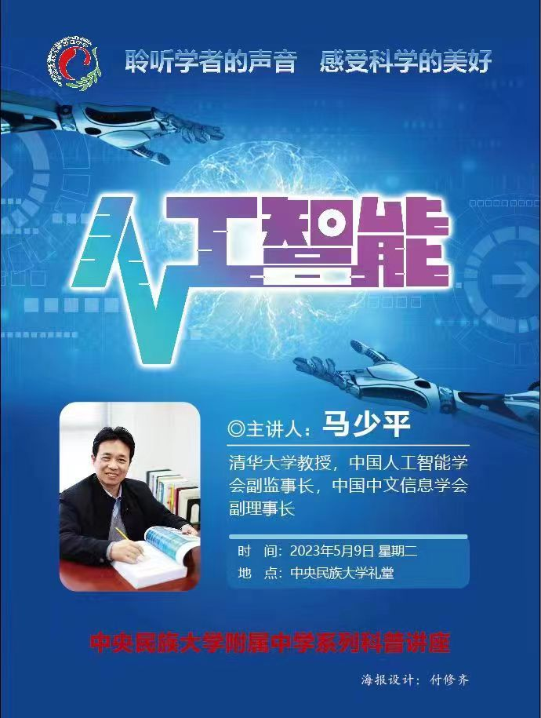
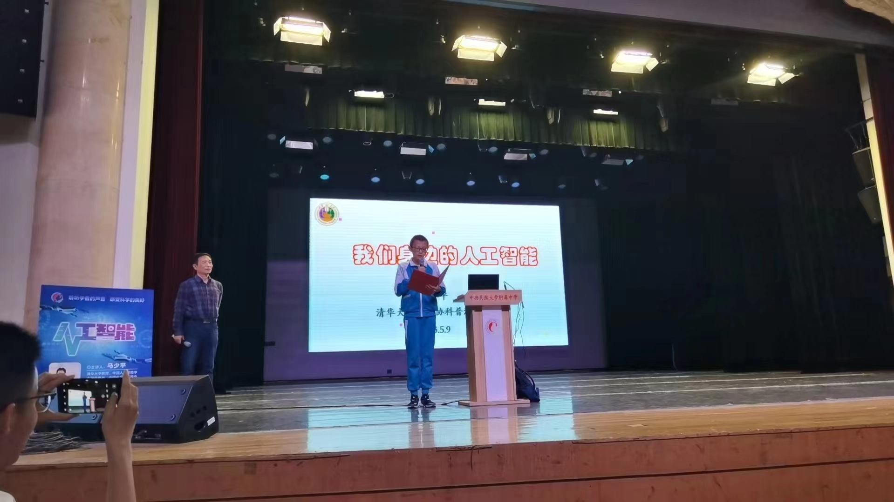

<h2>数学文化节</h2>
<video controls width="600" poster>
    <source src="数学文化节.mp4" type="video/mp4">
</video>
<p><a href="数学文化节.mp4" target="_blank">如不能观看，请点此</a></p>

<h2>我的年夜饭</h2>
<video controls width="600" poster>
    <source src="我的年夜饭.mp4" type="video/mp4">
</video>
<p><a href="我的年夜饭.mp4" target="_blank">如不能观看，请点此</a></p>

<h2>家长会视频</h2>
<video controls width="600" poster>
    <source src="家长会视频.mp4" type="video/mp4">
</video>
<p><a href="家长会视频.mp4" target="_blank">如不能观看，请点此</a></p>

<h2>付修齐设计的海报</h2>

<p> </p>

<h2>付修齐作讲座开场</h2>

<p> </p>
